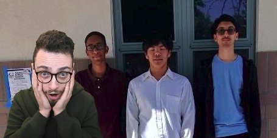

Chess Club MTHS
Blogs
Community Posts
This section is dedicated to the overarching Chess community, not limited to Monterey Trial Chess Club. If you would like to make a post request click the link below.+Post Request
This Weeks News
New opening is on fire right now, the Taimanov Sicilian 🔥🔥
Creator of Blog: IlikeCheese123 (2700 Rating)
The Taimanov sicilian is named after the Russian legend Mark Taimanov. This is now a very
popular opening after the Monterey Trial High School chess club have actively been promoting it
and is now played across the globe. This spectacular opening is one of the main branches of the
sicilian defense. Click on the title to learn more!
Date posted: May 19
Become a Dragon Slayer! (In Chess)
Creator of Blog: FrenchDefensePlayer (2300 Rating)
The Dragon Sicilian is a highly studied sicilian variation and is played from almost all elo
ranges. Depending on how much theory that the opponent memorizes from the aggressive opening,
will determine the fate of the game. A good dragon sicilian opening will have both sides being
aggressive. The Dragon sicilian derives its name from the dragon bishop for black on b7. This
"Dragon" is a very important part of the attack. Many people are now playing this because the
name has so much AURAAAA AHHHHHHH. Click on the title to learn more!
Date posted: May 18
GothamChess is considering joining MTHS Chess Club!
Creator: Iccrem (WEBSITE OWNER) (2950 Rating Grandmaster)
 Yes we are 100% totally not joking and you heard it right, internet and youtube
star GothamChess, formally known as international master Levy Rozman, has considered joining our school club. He is perhaps
famous for his hilarious and very educational chess commentary along with his hit banger guess the elo series
and openings playlists. We are looking forward to having you on the team Mr. Rozman. Click on the title to learn
more!
Date posted: May 13
Last Week
Creator: PiePower2 (1250 Rating)
They are trolling, don't play the bongcloud and lose. Please
upvote this blog post and raise awareness to ban that user. You Know what, I say President Jason Should filter the blog requests so that these GOOF messages don't appear.
Date posted: April 30
How to improve in chess (NOT CLICKBAIT)
Creator of Blog: IHateChess456 (329 Rating)
okay guys fsod oso i have a cray thoery to imrpove in chess
so what if the thoery is that we play the bongcloud defense mainline which would
thoeritically be able to throw the enemy off guard and help us score a easy win
because becaue because uhhhh becauye they will have no idea what to do after we
drag the king into the game and hinder our own development which will leave them
sitting there confused for 5 minutes and then we can obiosuly then win by time!!
foloow my strategy everyone i am a very trustworhy indiviual lolol
Date posted: April 29
On the basis of Fluid dynamics and Statics.
Creator of Blog: Evangelista Torricelli (2400 Rating)
Warning Unrelated Post please don't take this down. First, there needs
to be a clear and rigorous definition for fluids, so a fluid is defined here as any phase
of matter that has the ability to deform due to applied pressure. With that being said, the common
idea is that a "fluid" is just a liquid state of matter, but that is infact wrong because gases also
fall under the conditions that allows it to be considered a fluid. So the field of fluid statics
is the focus of studying particles that are not in motion and consists of many in real life
application such as explaining the phenomena regarding how deeper ocean levels tends to have a higher
pressure level. Fluid statics is also an important component to consider when it comes to building
dams strong enough to hold all of the mainly stationary water. Fluid dynamics tends to become outshined
then their fluid statics counterpart in that there are much more applications to it. Applications such as the
Bernoulli's principle, Brownian motion, etc which allows us to predict the motion and pressure
of the fluid. Fluid dynamics also have a play in aerodynamics applications in that Reynold numbers must
be considered in designing of the airfoil.
Date posted: April 29
Old News & Historical Blogs
IMPRESSIVE CHECKMATE Y'ALL CHECK THIS OUT
Creator of Blog: Paul Morphy (President)
Salutations and pleasure greeting all of my newcomers in Monterey Trial Chess club,
emerse thyself in joy deriving from the game of strategic battles from me and my opponent amidst an opera!
Date posted: June 23, 1857
WE WON NATIONALS LESSSS GOO W'S IN THE CHAT
{kind=link}
Creator of Blog: Arjun Erigaisi (Publicity)
I know we are living in the 1870s and twitch have not been
invented but please drop your W's in the chat
Date posted: Feburary 29, 1875